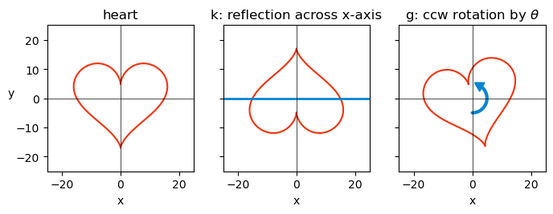
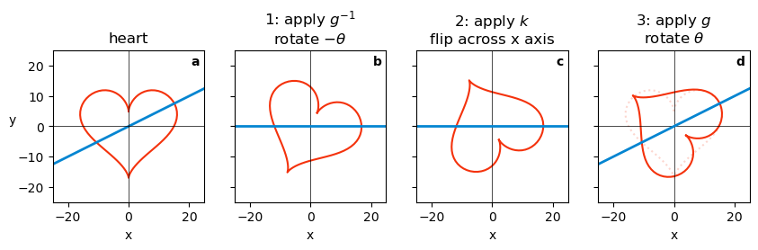
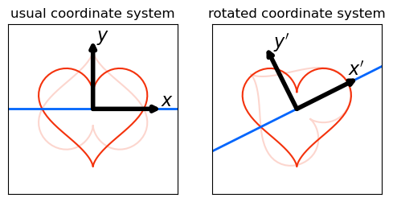
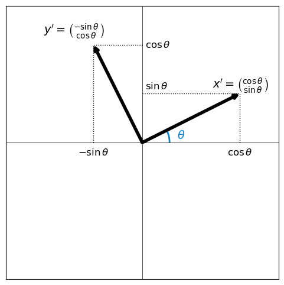

3 conjugation
I’d like to thank Adam Frank for his blog post on axiomtutor.com for helping me grasp intuitively the concept of conjugation.
Conjugation represents the idea that one operation can be seen from two different points of view. I’ll start with a concrete example.
Say that k represents a reflection across the x-axis, and g represents a counter-clockwise rotation by an arbitrary angle \theta. See below these two operations applied on a heart shape.
define useful functions
def drawCirc(ax,radius,centX,centY,angle_,theta2_,color_='black',linewidth=3):
#========Line
arc = Arc([centX,centY],radius,radius,angle=angle_,
theta1=0,theta2=theta2_,capstyle='round',linestyle='-',lw=linewidth,color=color_)
ax.add_patch(arc)
#========Create the arrow head
endX=centX+(radius/2)*np.cos(rad(theta2_+angle_)) #Do trig to determine end position
endY=centY+(radius/2)*np.sin(rad(theta2_+angle_))
ax.add_patch(
RegularPolygon(
(endX, endY),
numVertices=3,
radius=radius/5,
orientation=rad(angle_ + theta2_),
color=color_
)
)define transformations
red = 'xkcd:vermillion'
blue = 'xkcd:cerulean'
t = np.linspace(0, 2*np.pi, 100)
x = 16* (np.sin(t)) ** 3
y = 13* np.cos(t) - 5 * np.cos(2*t) - 2 * np.cos(3*t) - np.cos(4*t)
heart = np.array([x, y])
flip_x = np.array([[1, 0], [0, -1]])
def rotate(theta):
return np.array([[np.cos(theta), -np.sin(theta)], [np.sin(theta), np.cos(theta)]])
heart_x = flip_x @ heart
theta = np.atan(0.5)
heart_minus_theta = rotate(-theta) @ heart
heart_minus_theta_flipped = flip_x @ heart_minus_theta
heart_minus_theta_flipped_plus_theta = rotate(theta) @ heart_minus_theta_flipped
x_oblique_axis = np.array([-25, 25])
y_oblique_axis = 0.5 * x_oblique_axis
oblique_axis = np.array([x_oblique_axis, y_oblique_axis])
oblique_axis_minus_theta = rotate(-theta) @ oblique_axis
oblique_axis_minus_theta_plus_theta = rotate(theta) @ oblique_axis_minus_thetaplot k and g applied to a heart shape
fig, ax = plt.subplots(1, 3, sharey=True, figsize=(8, 4))
ax[0].plot(heart[0], heart[1], color=red)
ax[0].axhline(0, color='black', lw=0.5)
ax[0].axvline(0, color='black', lw=0.5)
ax[0].set_aspect('equal')
ax[0].set(xlabel='x', title='heart', xlim=x_oblique_axis, ylim=x_oblique_axis)
ax[0].set_ylabel('y', rotation=0)
ax[1].plot(heart_x[0], heart_x[1], color=red)
ax[1].axhline(0, color=blue, lw=2)
ax[1].axvline(0, color='black', lw=0.5)
ax[1].set_aspect('equal')
ax[1].set(xlabel='x', title='k: reflection across x-axis', xlim=x_oblique_axis, ylim=x_oblique_axis)
heart_15 = rotate(np.pi/12) @ heart
ax[2].plot(heart_15[0], heart_15[1], color=red)
ax[2].axhline(0, color='black', lw=0.5)
ax[2].axvline(0, color='black', lw=0.5)
ax[2].set_aspect('equal')
ax[2].set(xlabel='x', title=r'g: ccw rotation by $\theta$', xlim=x_oblique_axis, ylim=x_oblique_axis)
drawCirc(ax[2],radius=10,centX=0,centY=0,angle_=270,theta2_=150, color_=blue);
Because we are dealing with operations on a 2d plane, both k and g can be represented as 2\times2 matrices:
k = \begin{pmatrix} 1 & 0 \\ 0 & -1 \end{pmatrix} \quad\text{and}\quad g = \begin{pmatrix} \cos(\theta) & -\sin(\theta) \\ \sin(\theta) & \cos(\theta) \end{pmatrix}
What if we want to make a reflection of the heart shape across a different axis? In the graph below, the first panel on the left shows a reflection axis that is rotated by an angle \theta from the x-axis. With a little ingenuity, I don’t need to define a new reflection operation. Instead, I can use the existing reflection operation k and the rotation operation g to achieve the same effect.
conjugation of k and g applied to a heart shape
fig, ax = plt.subplots(1, 4, sharey=True, figsize=(10, 3))
ax[0].plot(heart[0], heart[1], color=red)
ax[0].plot(oblique_axis[0], oblique_axis[1], color=blue, lw=2)
ax[0].axhline(0, color='black', lw=0.5)
ax[0].axvline(0, color='black', lw=0.5)
ax[0].set_aspect('equal')
ax[0].set(xlabel='x', title='heart', xlim=x_oblique_axis, ylim=x_oblique_axis)
ax[0].set_ylabel('y', rotation=0)
ax[0].text(0.97, 0.97, r"a", transform=ax[0].transAxes,
horizontalalignment='right', verticalalignment='top',
fontweight="bold")
ax[1].plot(heart_minus_theta[0], heart_minus_theta[1], color=red)
ax[1].axhline(0, color='black', lw=0.5)
ax[1].axvline(0, color='black', lw=0.5)
ax[1].plot(oblique_axis_minus_theta[0], oblique_axis_minus_theta[1], color=blue, lw=2)
ax[1].set_aspect('equal')
ax[1].set(xlabel='x', title=r'1: apply $g^{-1}$' + "\n" + r'rotate $-\theta$', xlim=x_oblique_axis, ylim=x_oblique_axis)
ax[1].text(0.97, 0.97, r"b", transform=ax[1].transAxes,
horizontalalignment='right', verticalalignment='top',
fontweight="bold")
ax[2].plot(heart_minus_theta_flipped[0], heart_minus_theta_flipped[1], color=red)
ax[2].axhline(0, color='black', lw=0.5)
ax[2].axvline(0, color='black', lw=0.5)
ax[2].plot(oblique_axis_minus_theta[0], oblique_axis_minus_theta[1], color=blue, lw=2)
ax[2].set(xlabel='x', title=r'2: apply $k$' + "\n" + r'flip across x axis', xlim=x_oblique_axis, ylim=x_oblique_axis)
ax[2].text(0.97, 0.97, r"c", transform=ax[2].transAxes,
horizontalalignment='right', verticalalignment='top',
fontweight="bold")
ax[2].set_aspect('equal')
ax[3].plot(heart_minus_theta_flipped_plus_theta[0], heart_minus_theta_flipped_plus_theta[1], color=red)
ax[3].plot(heart[0], heart[1], color=red, alpha=0.2, ls=":")
ax[3].axhline(0, color='black', lw=0.5)
ax[3].axvline(0, color='black', lw=0.5)
ax[3].plot(oblique_axis_minus_theta_plus_theta[0], oblique_axis_minus_theta_plus_theta[1], color=blue, lw=2)
ax[3].set(xlabel='x', title=r'3: apply $g$' + "\n" + r'rotate $\theta$', xlim=x_oblique_axis, ylim=x_oblique_axis)
ax[3].text(0.97, 0.97, r"d", transform=ax[3].transAxes,
horizontalalignment='right', verticalalignment='top',
fontweight="bold")
ax[3].set_aspect('equal');
- We rotate the whole plane by an angle -\theta, which rotates the reflection axis (blue) to coincide with the x-axis (2nd panel). This is equivalent to applying the inverse of the rotation operation g^{-1} to the heart shape.
- Then we reflect the (rotated) heart shape across the x-axis (3rd panel). This is simply applying the reflection operation k to the rotated heart shape.
- Finally, we rotate the whole plane back by an angle \theta (4th panel). This is equivalent to applying the rotation operation g to the reflected heart shape. You can check the result by comparing the solid red curve with the original heart shape shown with a dotted line.
Try it yourself: each slider below applies one of the three steps, in order. The rightmost panel shows the final result (solid) against the original heart (dotted) for comparison.
Show the code
{
const π=Math.PI;
const RED='#e45810';
const RED_FILL='rgba(228,88,16,0.18)';
const ORIGINAL='rgba(0,0,0,0.35)';
const BLUE='#0485d1';
const AXIS='#333333';
const BG='#eeeeee';
const lim=25;
const thetaDeg=Math.atan(0.5)*180/π; // ≈ 26.565°, same θ as the static figures above
// same heart superformula used in the matplotlib cells above
const N=200;
const heart=d3.range(N).map(i=>{
const t=2*π*i/(N-1);
const x=16*Math.pow(Math.sin(t),3);
const y=13*Math.cos(t)-5*Math.cos(2*t)-2*Math.cos(3*t)-Math.cos(4*t);
return [x,y];
});
const obliqueAxis=[[-lim,-lim/2],[lim,lim/2]]; // slope 0.5, i.e. angle θ from the x-axis
function rotate(deg) {
const a=deg*π/180, c=Math.cos(a), s=Math.sin(a);
return p=>[c*p[0]-s*p[1], s*p[0]+c*p[1]];
}
function flipProgress(t) {
// continuously morphs the identity (t=0) into a full reflection y→-y (t=1)
return p=>[p[0], p[1]*(1-2*t)];
}
function mapPts(points,fn) { return points.map(fn); }
// ── one slider per step, each ranging over exactly that step's own journey:
// 0 = the panel on its left (not yet applied), max = the panel on its right
// (fully applied). Readout always shows plain progress, so "drag to 100%"
// means the same thing for every slider regardless of what it controls.
function makeSlider(label,max,step,fmt) {
const wrap=document.createElement('div');
wrap.style.cssText='margin-bottom:6px';
const lbl=document.createElement('label');
lbl.style.cssText='color:black;font-family:Arial,sans-serif;font-size:13px;'+
'display:flex;justify-content:space-between;margin-bottom:1px';
const name=document.createElement('span');
name.textContent=label;
name.style.fontWeight='bold';
const readout=document.createElement('span');
readout.textContent=fmt(0,max);
lbl.append(name,readout);
const inp=document.createElement('input');
inp.type='range';
inp.min=0; inp.max=max; inp.step=step; inp.value=0;
inp.style.cssText='width:100%;display:block;cursor:pointer;margin:0';
wrap.append(lbl,inp);
return {wrap,inp,max,fmt};
}
const pct=(v,max)=>`${Math.round(100*v/max)}%`;
const s1=makeSlider('slider 1 — a → b (apply g⁻¹)',thetaDeg,0.1,pct);
const s2=makeSlider('slider 2 — b → c (apply k)',1,0.01,pct);
const s3=makeSlider('slider 3 — c → d (apply g)',thetaDeg,0.1,pct);
const sliderBox=document.createElement('div');
sliderBox.style.cssText=`background:${BG};padding:10px;margin-bottom:10px;box-sizing:border-box;`;
sliderBox.append(s1.wrap,s2.wrap,s3.wrap);
// ── four panels, labeled a-d, matching the static figure above ──────────
const panelW=170, panelH=170;
const scale=(panelW-10)/(2*lim);
const cx=panelW/2, cy=panelH/2;
function X(x){ return cx+x*scale; }
function Y(y){ return cy-y*scale; }
function pathFor(points){
return points.map((p,i)=>`${i===0?'M':'L'}${X(p[0]).toFixed(2)},${Y(p[1]).toFixed(2)}`).join(' ');
}
function makePanel(title,subtitle) {
const wrap=document.createElement('div');
wrap.style.cssText=`width:${panelW}px;background:${BG};padding:6px;box-sizing:border-box;`;
const titleEl=document.createElement('div');
titleEl.innerHTML=`<b>${title}</b> — ${subtitle}`;
titleEl.style.cssText=
'font-family:Arial,sans-serif;font-size:12px;margin-bottom:3px;'+
'color:black;text-align:center';
const svg=d3.create('svg')
.attr('width',panelW)
.attr('height',panelH)
.style('background','white')
.node();
wrap.append(titleEl,svg);
return {wrap,svg:d3.select(svg)};
}
const pA=makePanel('a','heart');
const pB=makePanel('b','apply g⁻¹');
const pC=makePanel('c','apply k');
const pD=makePanel('d','apply g');
function drawBaseAxes(svgSel) {
svgSel.append('line').attr('x1',X(-lim)).attr('y1',Y(0)).attr('x2',X(lim)).attr('y2',Y(0))
.attr('stroke',AXIS).attr('stroke-width',1);
svgSel.append('line').attr('x1',X(0)).attr('y1',Y(-lim)).attr('x2',X(0)).attr('y2',Y(lim))
.attr('stroke',AXIS).attr('stroke-width',1);
}
function drawHeart(svgSel,points,{fill=true,stroke=RED,dash=null,opacity=1}={}) {
svgSel.append('path')
.attr('d',pathFor(points)+' Z')
.attr('fill',fill?RED_FILL:'none')
.attr('stroke',stroke)
.attr('stroke-width',1.8)
.attr('stroke-dasharray',dash)
.attr('opacity',opacity);
}
function drawAxisLine(svgSel,points) {
svgSel.append('line')
.attr('x1',X(points[0][0])).attr('y1',Y(points[0][1]))
.attr('x2',X(points[1][0])).attr('y2',Y(points[1][1]))
.attr('stroke',BLUE).attr('stroke-width',2);
}
function redraw() {
const g1=+s1.inp.value, k2=+s2.inp.value, g3=+s3.inp.value;
s1.wrap.querySelector('span:last-child').textContent=s1.fmt(g1,s1.max);
s2.wrap.querySelector('span:last-child').textContent=s2.fmt(k2,s2.max);
s3.wrap.querySelector('span:last-child').textContent=s3.fmt(g3,s3.max);
const panelB=mapPts(heart,rotate(-g1));
const axisB=mapPts(obliqueAxis,rotate(-g1));
const panelC=mapPts(panelB,flipProgress(k2));
const axisC=mapPts(axisB,flipProgress(k2));
const panelD=mapPts(panelC,rotate(g3));
const axisD=mapPts(axisC,rotate(g3));
for (const p of [pA,pB,pC,pD]) p.svg.selectAll('*').remove();
drawBaseAxes(pA.svg);
drawAxisLine(pA.svg,obliqueAxis);
drawHeart(pA.svg,heart);
drawBaseAxes(pB.svg);
drawAxisLine(pB.svg,axisB);
drawHeart(pB.svg,panelB);
drawBaseAxes(pC.svg);
drawAxisLine(pC.svg,axisC);
drawHeart(pC.svg,panelC);
drawBaseAxes(pD.svg);
drawAxisLine(pD.svg,axisD);
drawHeart(pD.svg,heart,{fill:false,stroke:ORIGINAL,dash:'4 3'});
drawHeart(pD.svg,panelD);
}
for (const s of [s1,s2,s3]) s.inp.addEventListener('input',redraw);
redraw();
const row=document.createElement('div');
row.style.cssText='display:flex;gap:10px;flex-wrap:wrap';
row.append(pA.wrap,pB.wrap,pC.wrap,pD.wrap);
const container=document.createElement('div');
container.append(sliderBox,row);
return container;
}To sum up: apply g^{-1}, then k, then g. Let’s call the resulting operation k', which is said to be a conjugate of k by g:
k' = g k g^{-1}.
Now let’s see the same thing from a slightly different perspective. If k means reflecting across the x-axis, then k' can also be interpreted as reflecting across the x-axis, but in a rotated coordinate system. See below, the usual axes x and y are used in the panel on the left, while a rotated coordinate system by \theta is used in the panel on the right.
conjugation of k and g applied to a heart shape
fig, ax = plt.subplots(1, 2, sharey=True, figsize=(6, 3))
ax[0].plot(heart[0], heart[1], color=red)
ax[0].plot(heart_x[0], heart_x[1], color=red, alpha=0.2)
ax[0].axhline(0, color=blue, lw=2)
ax[0].set_aspect('equal')
ax[0].set(title='usual coordinate system', xlim=x_oblique_axis, ylim=x_oblique_axis, xticks=[], yticks=[])
ax[0].annotate("", xy=(20, 0), xytext=(0, 0), fontsize=10, color="black", arrowprops=dict(arrowstyle="->", facecolor='black', lw=4, shrinkA=0, shrinkB=0),)
ax[0].annotate("", xy=(0, 20), xytext=(0, 0), fontsize=10, color="black", arrowprops=dict(arrowstyle="->", facecolor='black', lw=4, shrinkA=0, shrinkB=0),)
ax[0].text(20, 1, r'$x$', fontsize=16, color="black")
ax[0].text(1, 20, r'$y$', fontsize=16, color="black")
ex = np.array([[20,0]])
x_prime = rotate(theta) @ ex.T
why = np.array([[0,20]])
y_prime = rotate(theta) @ why.T
ax[1].plot(heart[0], heart[1], color=red)
ax[1].plot(heart_minus_theta_flipped_plus_theta[0], heart_minus_theta_flipped_plus_theta[1], color=red, alpha=0.2)
ax[1].plot(oblique_axis[0], oblique_axis[1], color=blue, lw=2)
ax[1].set_aspect('equal')
ax[1].set(title='rotated coordinate system', xlim=x_oblique_axis, ylim=x_oblique_axis, xticks=[], yticks=[])
ax[1].annotate("", xy=x_prime, xytext=(0, 0), fontsize=10, color="black", arrowprops=dict(arrowstyle="->", facecolor='black', lw=4, shrinkA=0, shrinkB=0),)
ax[1].annotate("", xy=y_prime, xytext=(0, 0), fontsize=10, color="black", arrowprops=dict(arrowstyle="->", facecolor='black', lw=4, shrinkA=0, shrinkB=0),)
ax[1].text(15, 10, r"$x'$", fontsize=16, color="black")
ax[1].text(-7, 18, r"$y'$", fontsize=16, color="black");
The rotated coordinate system is defined by unit vectors x' and y' which are exactly the column vectors of the rotation matrix g!
coordinates of the rotated axes
fig, ax = plt.subplots(1, 1, figsize=(6, 6))
ax.set_aspect('equal')
ax.set(xlim=x_oblique_axis, ylim=x_oblique_axis, xticks=[], yticks=[])
ax.axhline(0, color="black", lw=0.5)
ax.axvline(0, color="black", lw=0.5)
ax.annotate("", xy=x_prime, xytext=(0, 0), fontsize=10, color="black", arrowprops=dict(arrowstyle="->", facecolor='black', lw=4, shrinkA=0, shrinkB=0),)
ax.annotate("", xy=y_prime, xytext=(0, 0), fontsize=10, color="black", arrowprops=dict(arrowstyle="->", facecolor='black', lw=4, shrinkA=0, shrinkB=0),)
ax.add_patch(Arc((0, 0), 10, 10, angle=0, theta1=0, theta2=np.degrees(theta), color=blue, lw=2))
ax.text(6.5 * np.cos(theta * 0.4), 6.5 * np.sin(theta * 0.4) - 0.5, r"$\theta$", fontsize=14, color=blue)
ax.text(x_prime[0, 0] - 5, x_prime[1, 0] + 1, r"$x' = \binom{\cos\theta}{\sin\theta}$", fontsize=14, color="black")
ax.text(y_prime[0, 0]+2, y_prime[1, 0]+2, r"$y' = \binom{-\sin\theta}{\cos\theta}$", fontsize=14, color="black", ha="right")
xp0, xp1 = x_prime[0, 0], x_prime[1, 0]
yp0, yp1 = y_prime[0, 0], y_prime[1, 0]
# component lines for x' and y', treated as unit vectors: components are
# exactly cos(theta) and sin(theta), the drawn length just scales them for visibility
ax.plot([xp0, xp0], [0, xp1], color="black", ls=":", lw=1)
ax.plot([0, xp0], [xp1, xp1], color="black", ls=":", lw=1)
ax.plot([yp0, yp0], [0, yp1], color="black", ls=":", lw=1)
ax.plot([0, yp0], [yp1, yp1], color="black", ls=":", lw=1)
ax.text(xp0, -1, r"$\cos\theta$", fontsize=12, color="black", ha="center", va="top")
ax.text(0.5, xp1 + 0.5, r"$\sin\theta$", fontsize=12, color="black", ha="left", va="bottom")
ax.text(yp0, -1, r"$-\sin\theta$", fontsize=12, color="black", ha="center", va="top")
ax.text(0.5, yp1, r"$\cos\theta$", fontsize=12, color="black", ha="left", va="center");
So, another way to interpret the conjugation k' = g k g^{-1} is that it represents the same operation k (reflection across the x-axis), but in a rotated coordinate system defined by g.
The idea of conjugation is very general and can be applied to any operation, not just reflections. The one requirement is that the operation g must be invertible, so that we can apply g^{-1} to reverse the effect of g.
The underlying principle behind this generality is the “change-of-basis” formula. If M is the matrix of an operation k in a given basis, and g is an invertible matrix whose column vectors define a new basis, then
g^{-1}Mg
is the matrix of the same operator written in the basis whose vectors are the columns of g.
Conjugation by g preserves many properties of the operation k.
- The determinant of k' is the same as the determinant of k.
- The trace of k' is the same as the trace of k.
- The eigenvalues of k' are the same as the eigenvalues of k. (The eigenvectors are rotated by g).
- The conjugation of a bracket of two operations is the same as the bracket of the conjugated operations: \begin{align*} [k, l]' &= g [k, l] g^{-1} \\ &= g (kl - lk) g^{-1} \\ &= gklg^{-1} - glkg^{-1} \\ &= gkg^{-1}glg^{-1} - glg^{-1}gkg^{-1} \\ &= (gkg^{-1})(glg^{-1}) - (glg^{-1})(gkg^{-1}) \\ &= [gkg^{-1}, glg^{-1}] \\ &= [k', l'] \end{align*}